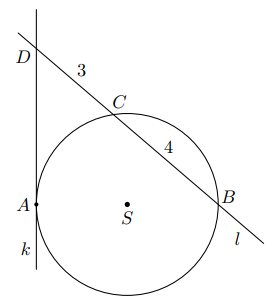
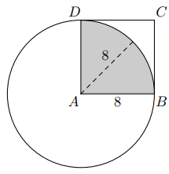
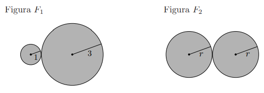
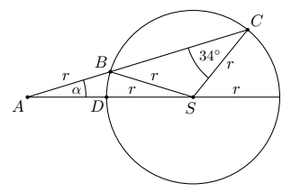
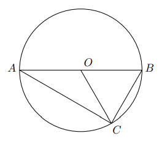
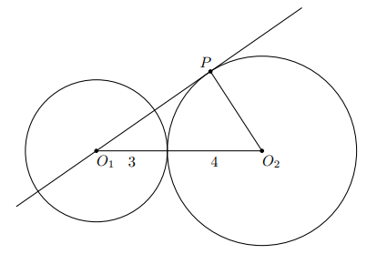

Odcinek AB jest średnicą okręgu o środku S. Prosta k styczna w punkcie A. Prosta l przecina okrąg w B i C.
Proste k i l przecinają się w D. Dane: |BC|=4, |CD|=3.

Odległość punktu A od prostej l jest równa:
Z twierdzenia potęgi punktu i własności średnicy korzystamy z zależności geometrycznych.
Po przekształceniach odległość A od prostej l wynosi \( \sqrt{12} \).
Odp.: C.
Zad. 5
(grudzień 2022 - zad. 21)
Dany jest kwadrat ABCD o boku długości 8. Z wierzchołka A zakreślono koło o promieniu równym długości boku kwadratu.

Pole powierzchni części wspólnej koła i kwadratu jest równe:
Promień koła \(r=8\). Część wspólna to ćwiartka koła (sektor \(90^\circ\)) wewnątrz kwadratu.
Pole figury \(F_1\) złożonej z dwóch stycznych zewnętrznie kół o promieniach 1 i 3 jest równe polu figury \(F_2\) złożonej z dwóch stycznych zewnętrznie kół o promieniach \(r\).

Długość promienia \(r\) jest równa:
W romb o boku \(2\sqrt{3}\) i kącie \(60^\circ\) wpisano okrąg. Promień tego okręgu jest równy:
Pole rombu: \(P=a^2\sin\alpha=(2\sqrt{3})^2\cdot \sin60^\circ=12\cdot \frac{\sqrt{3}}{2}=6\sqrt{3}\).
Półobwód: \(s=2a=4\sqrt{3}\). Dla okręgu wpisanego: \(r=\frac{P}{s}=\frac{6\sqrt{3}}{4\sqrt{3}}=\tfrac{3}{2}\).
Odp.: D.
Zad. 8
(czerwiec 2019 - zad. 14)
Punkty B, C i D leżą na okręgu o środku S i promieniu \(r\). Punkt A jest punktem wspólnym prostych \(BC\) i \(SD\), a odcinki \(AB\) i \(SC\) są równej długości. Miara kąta \( \angle BCS\) jest równa \(34^\circ\).

Wtedy:
Zależności kątów środkowych i wpisanych oraz warunek \(AB=SC=r\) prowadzą do równości odpowiadających łuków.
Po analizie kątów przy cięciwach i średnicy \(SD\) otrzymujemy \( \alpha = 17^\circ\).
Odp.: B.
Zad. 9
(czerwiec 2018 - zad. 16)
Odcinek \(AB\) jest średnicą okręgu o środku \(O\) i promieniu \(r\). Na tym okręgu wybrano punkt \(C\), taki, że \(|OB|=|BC|\).

Pole trójkąta \(AOC\) jest równe:
Okręgi o promieniach 3 i 4 są styczne zewnętrznie. Prosta styczna do okręgu o promieniu 4 w punkcie \(P\) przechodzi przez środek okręgu o promieniu 3.

Pole trójkąta, którego wierzchołkami są środki okręgów i punkt styczności \(P\), jest równe:
\(O_1O_2=3+4=7\) (styczność zewnętrzna). Promień do punktu styczności: \(O_2P=4\) i jest prostopadły do stycznej.
Trójkąt \(O_1O_2P\) jest prostokątny, z przeciwprostokątną \(7\). \(O_1P=\sqrt{7^2-4^2}=\sqrt{33}\).